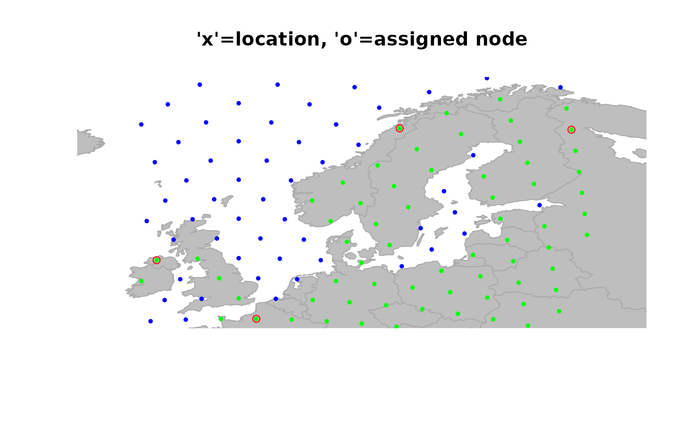

The function closestNode searches for the closest node in a
gGraph or a gData object to a given location. It
is possible to restrain the research to given values of a node attribute.
For instance, one can search the closest node on land to a given
location.
Usage
closestNode(x, ...)
# S4 method for class 'gGraph'
closestNode(x, loc, zoneSize = 5, attr.name = NULL, attr.values = NULL)
# S4 method for class 'gData'
closestNode(x, zoneSize = 5, attr.name = NULL, attr.values = NULL)Arguments
- x
a valid gGraph or gData object. In the latter case, the gGraph to which the gData is linked has to be in the current environment.
- ...
further arguments passed to specific methods.
- loc
locations, specified as a list with two components indicating longitude and latitude of locations. Alternatively, this can be a data.frame or a matrix with longitude and latitude in columns, in this order. Note that
locator()can be used to specify interactively the locations.- zoneSize
a numeric value indicating the size of the zone (in latitude/longitude units) where the closest node is searched for. Note that this only matters for speed purpose: if no closest node is found inside a given zone, the zone is expanded until nodes are found.
- attr.name
the optional name of a node attribute. See details.
- attr.values
an optional vector giving values for
attr.names. See details.
Value
If x is a gGraph object: a vector of node
names.
If x is a gData object: a gData object
with matching nodes stored in the @nodes.id slot. Note that previous
content of @nodes.id will be erased.
Details
This function is also used to match locations of a gData
object with nodes of the gGraph object to which it is linked.
When creating a gData object, if the gGraph.name
argument is provided, then locations are matched with the gGraph
object automatically, by an internal call to closestNode. Note, however,
that it is not possible to specify node attributes (attr.names and
attr.values) this way.
See also
geo.add.edges and geo.remove.edges to
interactively add or remove edges in a gGraph object.
Examples
if (FALSE) { # \dontrun{
## interactive example ##
plot(worldgraph.10k, reset = TRUE)
## zooming in
geo.zoomin(list(x = c(-6, 38), y = c(35, 73)))
title("Europe")
## click some locations
myNodes <- closestNode(worldgraph.10k, locator(), attr.name = "habitat", attr.value = "land")
myNodes
## here are the closestNodes
points(getCoords(worldgraph.10k)[myNodes, ], col = "red")
} # }
## example with a gData object ##
myLoc <- list(x = c(3, -8, 11, 28), y = c(50, 57, 71, 67)) # some locations
obj <- new("gData", coords = myLoc) # new gData object
obj
#>
#> === gData object ===
#>
#> @coords: spatial coordinates of 4 nodes
#> lon lat
#> 1 3 50
#> 2 -8 57
#> 3 11 71
#> ...
#>
#> @nodes.id: nodes identifiers
#> character(0)
#>
#> @data: data
#> NULL
#> ...
#>
#> Associated gGraph:
obj@gGraph.name <- "worldgraph.10k" # this could be done when creating obj
obj <- closestNode(obj, attr.name = "habitat", attr.value = "land")
## plot the result (original location -> assigned node)
plot(obj, method = "both", reset = TRUE)
#> Warning: "method" is not a graphical parameter
title("'x'=location, 'o'=assigned node")
